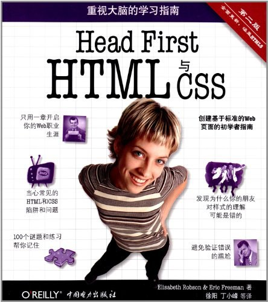

第一阶段：前端学习(HTML + CSS + JS)
第一本书:《Head First HTML 与 CSS》

主要结构：
HTML(全称hyper text markup language)超文本标记语言,分为两个部分,一部分是hypertext超文本,即a链接, 另一部分是markup标记即html文档中的单标记和双标记.
HTML决定结构，CSS决定表现.
画出结构草图,组织所有资源文件.
读书笔记:
浏览器会忽视html文档中的回车，制表符，和空格，如果要在浏览器中表示，可以用<br>来换行,表示回车; 用 来表示空格;用 表示两个空格宽度;用 表示四个空格宽度.
<!--你想要注释掉的内容-->注释掉的内容不会作为代码运行.
开始标记加内容加结束标记称为一个元素,例如<h1>Starbuzz Coffee Beverages</h1>,<h1> 是开始标记,Starbuzz Coffee Beverages是内容,</h1>是结束标记,一整个称之为元素.
在CSS中指定颜色有三种方式:十六进制#000000;rgb(0, 0, 0);颜色名black.
href(hypertextreference)即超文本引用属性用来指向网络或本地计算机上的资源文件.
引用文件时,相对路径使用../去到上一层.
不管是什么系统,在html中都用/作分隔符.
<q>和<blockquote>都表示引用,前者是内联元素,后者是块标记.
用<表示<;用>表示>;用&表示&;这符号表示看上去不起眼,但很重要, 我自己在用的时候试过pre标签和xml标签来表示代码,但试下来还是用符号表示更重要. 更多特殊字符:
http://www.unicode.org/charts/
starbuzzcoffee.com是一个域名;www.starbuzzcoffee.com是一个网站;
元素中属性的顺序不重要.
使用href和id属性来实现定位跳转.
在img中使用属性alt来提供图片信息,在图片未能成功显示时,浏览器会显示该信息.
如果不用ps事先调整图像大小,而使用width和height属性来调整图像大小,那浏览器还是需要加载大图像就行缩放, 占用更多资源.
W3C验证工具:
http://validator.w3.org
一个元素可以加入多个类,如果类中有相同属性,那么起作用的是最后定义的那个类.
验证CSS的工具:
http://jigsaw.w3.org/css-validator
CSS中包含的语句称之为规则.
使用@font-face定义web字体:
@font-face { font-family: src: }
padding并不包含在width中.
通过@media使用媒体查询.
通过数字来计算选择器特定性: 包含id则在最左边加一,即100. 包含类或伪类则在中间加一,即010. 包含元素名则在最右边加一,即001.
通过float,position,和CSS表格来进行布局.
浮动元素必须设置宽度.
使用caption-side调整表格下标题的位置,border-spacing调整单元格间距,border-collapse使单元格间没有间距.